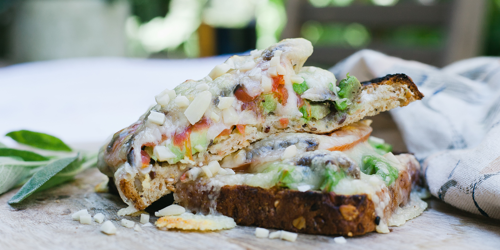

California Melt

Description
A satisfying open-face vegetarian sandwich with avocado, almonds and mushrooms.
Servings: 4
Ingredients:
- 4 slices whole-grain bread, lightly toasted
- 1 avocado, sliced
- 1 cup sliced mushrooms
- 1/3 cup sliced toasted almonds
- 1 tomato, sliced
- 4 slices Swiss Cheese
Steps:
- Preheat the oven broiler.
- Lay the toasted bread out on a baking sheet. Top each slice of bread with 1/4 of the
avocado, mushrooms, almonds, and tomato slices. Top each with a slice of Swiss cheese.
- Broil the open-face sandwiches until the cheese melts and begins to bubble, about 2 minutes. Serve the sandwiches warm.
Nutrition:
- Calories: 335
- Protein: 15.6g
- Carbs: 21.1g
- Fat: 22.5g